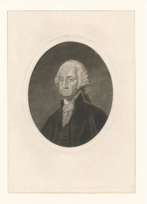
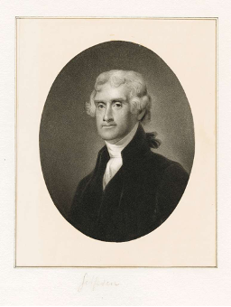
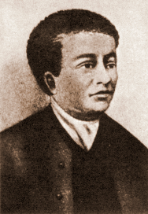
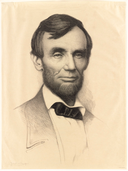

Land surveyors have been a cornerstone of American history since the very beginning. Historical land surveyors are an important part of the country's settling. In fact, many of the Founding Fathers of America themselves were surveyors. Here are some famous surveyors from history;
William Clark and Meriwether Lewis are names that everybody learns in school, who were, in fact, land surveyors. The pair was tasked with some of the most intensive land surveying in American history. While Lewis had a reputation as more of a planner, Clark was an expert surveyor and mapmaker. Together, the partners traveled across the land then known as the Louisiana Purchase, making their way to Oregon to scout it out.

George Washington is one of America’s most famous (and earliest) land surveyors. The young future president got his bright start at the age of 17 in 1749. It was not long until he was appointed to be the Surveyor General for Virginia. Washington played an essential role at this time because surveying the land promoted expansion westward.
George Washington was not the only president to work as a surveyor. Thomas Jefferson was appointed to work as the Albermarle County surveyor in Virginia in 1773. He also promoted surveying by sending Lewis and Clark on their expedition to explore the land gained through the Louisiana Purchase.
As a self-taught African American mathematician, astronomer, and surveyor, Benjamin Banneker was remarkably successful. Banneker was well know for creating a series of almanacs in the 1790s, the almanacs covered everything from astronomy to ocean tidal patterns, to surveying. In 1790, Banneker was invited to be part of the team surveying the future site of Washington, D.C.
Abraham Lincoln. The nation’s 16th president got his start as a self-educated man in Kentucky. He worked as a storekeeper and postal worker in addition to surveying land and studying law at the same time. Lincoln was a man with a great deal of talent and many skills, he spent much of his time participating in several types of work before he became president.
